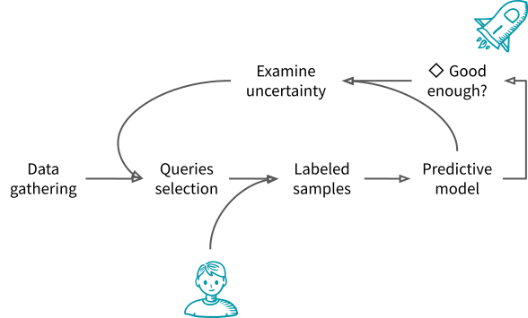

Introduction to Active Learning¶
Motivation¶
“Data is the new oil”. Most of people have heard this sentence at least once, and probably a lot of people in various companies actually took it very seriously. As a result, many companies have started acquiring as much data as they could about everything, sometimes without even a specific goal in mind. The reason is simple: data collection is tedious and once data can come in handy, we need a learning set, and therefore historical logs. As a result, a lot of data is sitting in servers, sometimes unlabelled.
Labeling data can be a costly task. Indeed, with the raise of deep learning, models require more and more data to achieve good accuracy. And annotation can be particularly difficult or tedious in complex tasks, such as medical imaging, or text analysis. Since budget is a limited resource, people are looking into ways to maximize a given metric on their model, usually accuracy, for a fixed budget.
Active Learning hold the promise of making the most out of a given budget by carefully selecting the samples to be given to the annotators. The intuition behind active learning is indeed very natural. Imagine that you are learning a new language from a set of predetermined sentences that you have to translate with a dictionary. If you are given the sentences “The sky is light blue”, “The sky is blue”, and “The firemen saved the baby”, you may want to start with a first sentence, skip the second one, because it is very close to the first one and does not bring new information, and then do the third one. Most active learning strategies follow the same principle as they aim at selecting the samples that will bring the most information to the model.
Use Cases and Apparented Techniques¶
Use cases leveraging active learning are numerous. We have already cited medical imaging where, for example, we want to ask a radiologist to segment cancer from histological data in order to train a model to do it automatically. We also took the example of text translation where labelling is achieved by a translator. But active learning has been particularly under the spotlights recently with the rise of deep learning and in particular the labeling of images and the rise of Amazon Mechanical Turk.
But Active Learning is not the only way to get information out of unlabelled data. Unsupervised learning, obviously, tries to make sense out of the data based solely on its underlying structure. Weak supervision uses noisy or incomplete labels to learn to avoid the burden of having to label precisely the data. Self supervised learning uses the data itself to supervise itself.
Active learning workflow¶
The typical Active Learning workflow consists in:
- Data gathering - Queries selection
Acquire the data you need. For the first selectionof samples to label, an unsupervised sampling approach is used. The most common is random but density based approach can be used too.
- Data Labeling
Send the selected samples – also called queries – to an annotator that will add their label.
- Predictive model
Integrate this new data into the model. If the model is an online one, one can seemlessly add the new samples. Otherwise, the model can be learned again on the full labeled data. Note that using the information from the previous iteration can be used through warm starting if the model supports it.
- Stop or continue
The accuracy of the model can be tested on the training set through cross-validation or one can use any metric linked to the task they are trying to accomplish. For example, in the case of anomaly detection, all abnormal samples are sent to labelling and one can stop when the model is able to spot accurately the anomalies. At each iteration, one must decide if the model is good enough of if it requires more training.
- Examine uncertainty and select the next queries
If the model is not good enough, one can look at prediction scores of the model and see which samples could improve it the most. These samples become the queries of the next iteration.
So how do we decide which samples are the most likely to improve the model? There are several intuitions thatwe can follow, and they have given birth to the strategies that are used today:
Model confusion. Samples on which the model fails to do the right prediction are very likely to bring information.
Diversity. A model can be seen as a summary of the samples used to train it. The samples that are very different from the training ones must therefore bring information.
Representativeness. Sample prototypes that are representative of the most common structures of the problem.
Not convinced? Check out the following example that illustrate how a simple Active Learning strategy improves the accuracy of a model faster than random sample selection on a simple binary classification task: